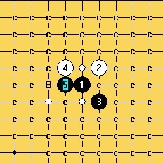
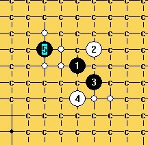
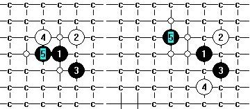
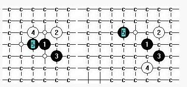
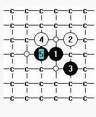
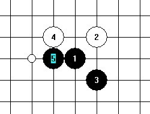

蒲月最后两点进展
#1 蒲月最后两点进展 作者：安娜制作所 发表时间：2010-12-1 8:08:07
 
附件
 g9-g8-k.rar
H6-f9+g10.rar
g9-g8-k.rar
H6-f9+g10.rar
［ 茗弈七夜 于 2010-12-1 11:00:56 时花20金币送鲜花一朵］
［ 踵酃 于 2010-12-1 11:38:21 时花20金币送鲜花一朵］
#2 Re:蒲月最后两点进展 作者：屏蔽 发表时间：2010-12-1 9:37:16
第二图右下两个点，7走5右上。#3 Re:蒲月最后两点进展 作者：踵酃 发表时间：2010-12-1 9:41:44
你能稍微说点什么吗？比如说说进展的如何？或者。。。。让我猜猜：发这两个5打点，把其他的无用的防都扫了一遍，留下了白色的点，你想让大家研究一下没C的点吗？#4 Re:蒲月最后两点进展 作者：茗弈七夜 发表时间：2010-12-1 11:02:38
首先自然要感谢安娜姐姐发帖，其次白色的点肯定是有待解决的啦。革命尚未成功，我辈仍需努力~#5 Re:蒲月最后两点进展 作者：安娜制作所 发表时间：2010-12-1 11:29:12
理解万岁!［ 茗弈七夜 于 2010-12-1 11:44:24 时花20金币送鲜花一朵］
#6 Re:蒲月最后两点进展 作者：西门东风 发表时间：2010-12-1 11:34:40
谢谢安娜老师分享。#7 Re:蒲月最后两点进展 作者：冷酒一杯 发表时间：2010-12-1 12:39:42
谢谢，安！#8 Re:蒲月最后两点进展 作者：屏蔽 发表时间：2010-12-1 14:17:58
［ 安娜制作所 于 2010-12-7 13:38:58 时花20金币送鲜花一朵］
#9 Re:Re:蒲月最后两点进展 作者：安娜制作所 发表时间：2010-12-2 12:22:07

#10 Re:蒲月最后两点进展 作者：屏蔽 发表时间：2010-12-2 14:17:52
#11 Re:蒲月最后两点进展 作者：屏蔽 发表时间：2010-12-2 14:26:12
#12 Re:蒲月最后两点进展 作者：安娜制作所 发表时间：2010-12-2 14:37:33
嗯,我再想想, 怎么绕?谢谢!#13 Re:蒲月最后两点进展 作者：屏蔽 发表时间：2010-12-2 15:59:59
我就那么一说……11之后已经很容易扫了吧。#14 Re:蒲月最后两点进展 作者：屏蔽 发表时间：2010-12-3 11:22:30
#15 Re:蒲月最后两点进展 作者：左伟光 发表时间：2010-12-3 11:25:11
这个图还剩这个14=======上图对应的爱五子棋谱代码如下，以便你拆解：========
h8i9i7h6f9g9e8f8g10h11e7e9g7f7
======================================================下面杀不出了
#16 Re:蒲月最后两点进展 作者：左伟光 发表时间：2010-12-3 11:44:12
H6-f9+g10.part01.rarH6-f9+g10.part02.rar
=======上图对应的爱五子棋谱代码如下，以便你拆解：========
h8i9i7h6f9
======================================================
［ 逆刃 于 2010-12-3 13:01:37 时奖励此帖[金币加 100 威望加1］
［ 丌同 于 2010-12-3 13:23:28 时奖励此帖[金币加 100 威望加1］
#17 Re:蒲月最后两点进展 作者：左伟光 发表时间：2010-12-3 11:51:38
关于第1个图，娜娜能不能把其他4个打点指出来这个未必是第5打点#18 Re:Re:蒲月最后两点进展 作者：安娜制作所 发表时间：2010-12-4 8:08:39
#19 Re:蒲月最后两点进展 作者：屏蔽 发表时间：2010-12-4 13:01:26
16L那个没必胜是么……我还以为怎么着了呢。#20 Re:Re:蒲月最后两点进展 作者：安娜制作所 发表时间：2010-12-6 8:10:04
#21 Re:蒲月最后两点进展 作者：踵酃 发表时间：2010-12-6 8:43:44
太硬了，没必胜巴，这个５打#22 Re:Re:Re:蒲月最后两点进展 作者：安娜制作所 发表时间：2010-12-6 16:58:35
只剩这个五的三个6没解决了!
g9-g8-k.rar
#23 Re:蒲月最后两点进展 作者：sonix 发表时间：2010-12-6 19:32:08
333.rar
［ 逆刃 于 2010-12-6 20:11:09 时花20金币送鲜花一朵］
［ 安娜制作所 于 2010-12-7 7:59:46 时花20金币送鲜花一朵］
#24 Re:蒲月最后两点进展 作者：逆刃 发表时间：2010-12-6 20:15:03
=======上图对应的爱五子棋谱代码如下，以便你拆解：========
h8i9i7g9g8h9f9
======================================================这个不是通斜月三打么？
［ 安娜制作所 于 2010-12-7 8:00:12 时花20金币送鲜花一朵］
#25 Re:蒲月最后两点进展 作者：踵酃 发表时间：2010-12-6 22:08:36
上面那个是通斜月1打，记得这个形状已经必胜了。#26 Re:蒲月最后两点进展 作者：踵酃 发表时间：2010-12-6 22:14:59
查过了，很像， 但不是，呵呵#27 Re:Re:蒲月最后两点进展 作者：安娜制作所 发表时间：2010-12-7 8:46:14
感谢SONICS,逆刃老师! 通斜三的支路我也没有,麻烦谁有的话,发一个支路上来,谢谢!#28 Re:蒲月最后两点进展 作者：自来水 发表时间：2011-1-14 11:29:28
=======上图对应的爱五子棋谱代码如下，以便你拆解：========
h8i9i7g9g8h9f9h7
======================================================以前拆过，感觉没什么前途就搁置了
#29 Re:Re:蒲月最后两点进展 作者：安娜制作所 发表时间：2011-1-20 8:31:39
自来水老师:那个也解决了,只剩下最后一个六了

#30 Re:蒲月最后两点进展 作者：自来水 发表时间：2011-1-23 13:24:04
=======上图对应的爱五子棋谱代码如下，以便你拆解：========
h8i9i7g9g8f8h10
======================================================


#31 Re:蒲月最后两点进展 作者：安娜制作所 发表时间：2011-1-23 13:44:22
这个7也很复杂,难做的支路好多.